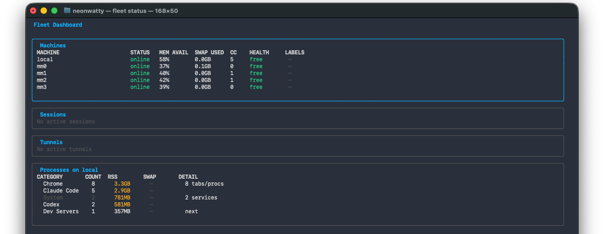
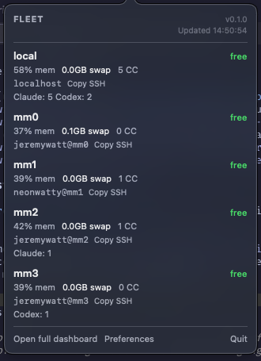

Probe the fleet
Fleet checks online status, available memory, swap pressure, and current Claude Code or Codex process counts across configured machines.
Local Mac fleet control for coding agents
Fleet auto-picks the healthiest Mac, launches isolated worktrees, keeps remote dev servers reachable through localhost, and gives you a live dashboard for Claude Code and Codex-style workloads.
Fleet is built for the moment when one Mac is no longer enough for active coding-agent work, but a full cloud scheduler is the wrong shape. Your MacBook stays the control plane. Your Mac minis stay simple SSH targets.
How it works
Fleet checks online status, available memory, swap pressure, and current Claude Code or Codex process counts across configured machines.
It creates or updates a bare clone, opens a fresh worktree, and starts the configured command on the chosen Mac.
SSH tunnels map remote dev servers back to local ports, including pinned ports for OAuth callbacks that expect localhost.

Visibility
Track machines, sessions, tunnels, and heavyweight process groups from one terminal view.
See online machine count, active coding-agent sessions, labels, accounts, swap pressure, and SSH targets from macOS.
Let Claude Code, Codex, or scripts inspect capacity and choose an SSH target with fleet status --json.
Worktrees, tunnels, state, labels, and stale sessions are reconciled with fleet clean and fleet doctor.

Install
Fleet targets macOS and uses your existing SSH configuration. Release archives include installer and uninstaller scripts.
tar -xzf fleet_VERSION_darwin_arm64.tar.gz
cd fleet_VERSION_darwin_arm64
scripts/install.sh
fleet init
fleet statusUse cases
Start separate sessions across machines without manually checking Activity Monitor or remembering which host is overloaded.
Pin local tunnel ports so callbacks registered to localhost:3000 keep working while the dev server runs remotely.
Keep fleet status visible while you work in other apps, then open the full dashboard when a machine needs attention.
Expose fleet status --json so coding agents can explain their machine choice before starting long-running work.
Deliberately narrow
Fleet shells out to your system SSH setup. The remote Macs do not need a resident service.
The probing, menu bar app, and release artifacts are designed around Apple Silicon Macs.
Config and session state live under ~/.fleet, with dry-run cleanup and doctor commands for inspection.